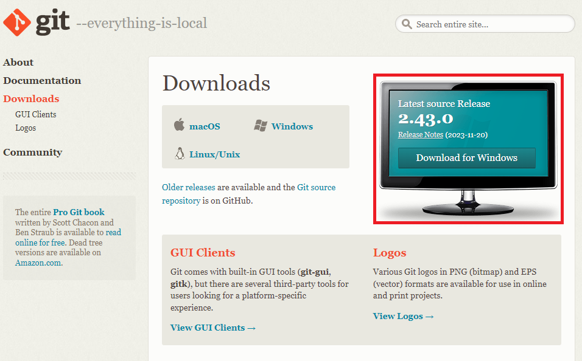
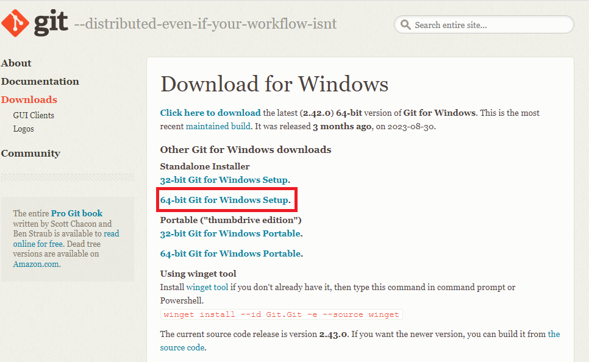
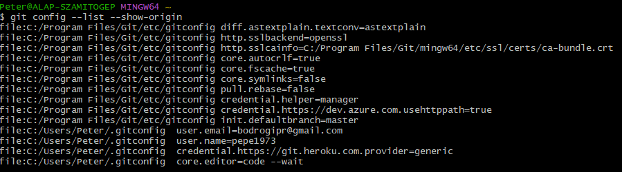
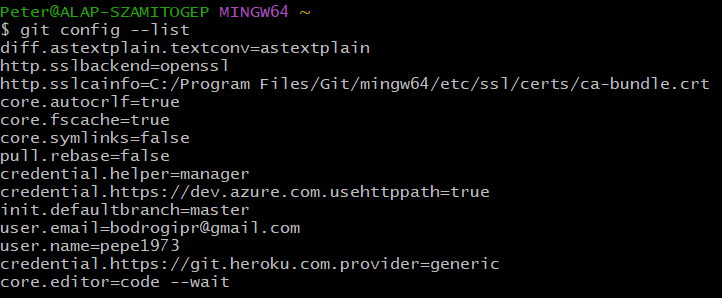
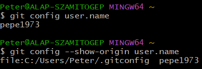
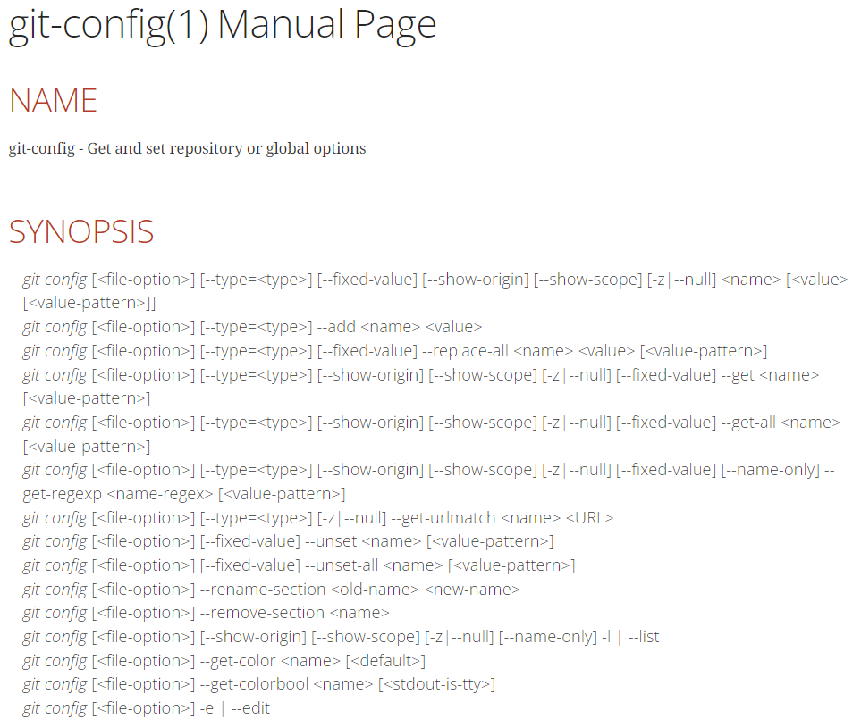
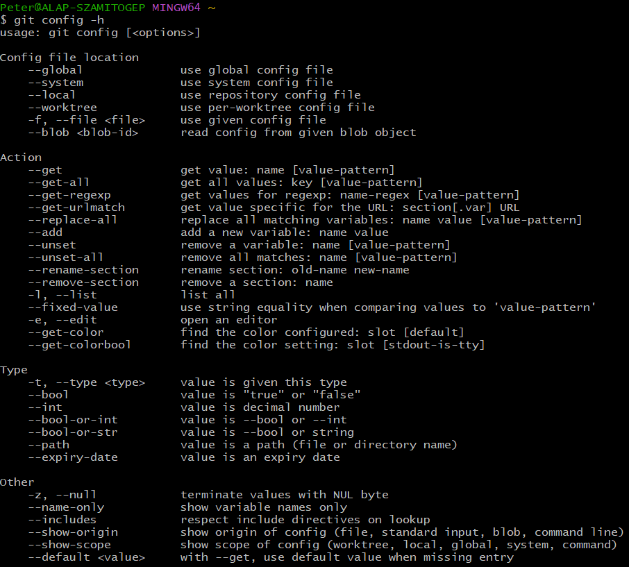

A Git telepítése:
-
Git letöltése Windows-os gépekre:
link

- Következő lépés.

-
Javasolt az ajánlott értékeken végigkattintgatva telepíteni
a Git-et. A Chocolatey rész kihagyható.
Beállítások:
-
Miután feltelepítettük a Git-et a gépünkre, ajánlott néhány
beállítást eszközölnünk. Ezek a későbbi frissítések mellett
is érvényben maradnak. Három helyen találhatóak meg a
beállításokhoz szükséges állományok:
-
[path]/etc/gitconfig
-
Az itt tárolt értékek minden egyes
felhasználóra és azok adattárára (repository) igaz.
-
A
git config --system
utasítással szerkeszthetjük.
-
[path]/.gitconfig vagy
[path]/.config/git/config
-
Az itt tárolt értékek speciálisan az adott
felhasználóra és az ő adattáraira (repository) vonatkozik.
-
A
git config --global
utasítással szerkeszthetjük.
- Felülírja az előzőt.
-
.git/config
-
Speciálisan egy projektre vonatkozó
adattárban lévő állomány.
-
A
git config --local
utasítással szerkeszthetjük.
-
Az ebben az állományban beállított értékek
lesznek a mérvadóak. Azaz felülírják az
előző kettőt.
-
A beállítások lekérdezhetőek:
git config --list --show-origin

-
Ha csak a beállítások érdekelnek és a forrásuk nem, akkor:
git config --list

-
Az első beállításnak az azonosításnak kell lennie:
git config --global user.name "username"
git config --global user.email "user email"
A Git ezeket az értékeket fogja használni mindenegyes
esetben a véglegesítésekhez (commit). Speciális projektek esetén felülírható a
--global jelölő nélkül.
-
A Git alapértelmezetten a
master ágat (branch) hozza létre. Ez bármikor átírható az adott projekt
esetén. Ezt a GitHub esetén meg is tesszük.
git config --global init.defaultbranch main
-
Alapértelmezett szerkesztő beállítása. A fenti példában ez a
Visual Studio Code. De bármikor
átírható egy másikra. Például:
git config --global core.editor emacs
vagy
git config --global core.editor "'C:/Program
Files/Notepad++/notepad++.exe' -multiInst -notabbar
-nosession -noPlugin"
-
Speciális értékekre is szűrhetünk:
git config user.name
Ha szükségünk van az állományra is amelyből kiolvastuk:
git config --show-origin user.name

Segítségkérés:
-
Számos kézikönyv (manpage)
érhető el akár offline is. Ehhez adjuk ki például a
következő utasítást:
git help config
Ez a következő oldalt nyitja meg.

-
Ha viszont csak egy gyors áttekintésre van szükségünk, akkor
git config -h

Források:
git
github